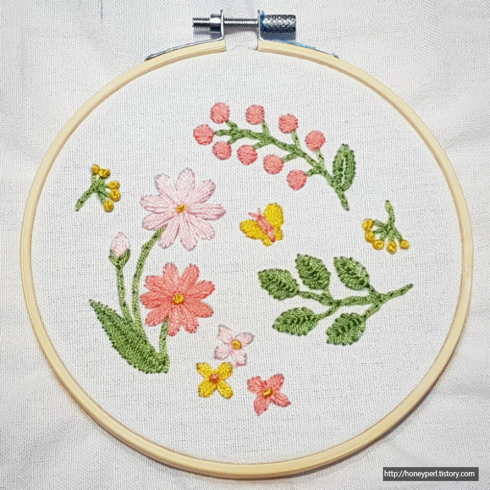
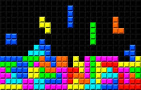

WEB
소개
취미
마지막
취미
저의 취미는 다양합니다.
첫번째
책읽기 입니다. 책을 읽으면 똑똑해지는 기분이 들어 좋습니다.
두번째
십자수 하기 입니다. 이건 최근에 다이소키트로 시작한 취미인데계속 앉아 있는게 힘들지만 완성이 되면 뿌듯하고 이쁩니다.
세번째
게임 입니다. 전 테트리스를 가장많이 하는데 집중이 정말 잘 되고 신기록을 깰때 쾌감이 좋습니다.
이렇게 저의
대표적인 취미 3가지
를 말해보았습니다.
 